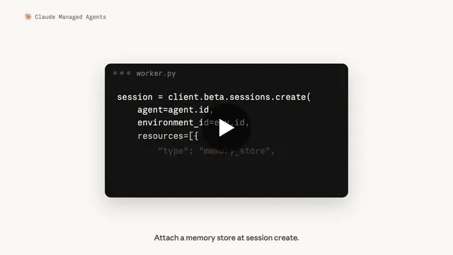

Anthropic / モデル更新
Claude Managed Agents強化、自己ホスト環境のMemory対応やドメイン制御を追加

Anthropicは、Claude Managed Agentsに3つのアップデートを投入しました。Self-Hosted SandboxesでのMemory利用、Webアクセスのドメイン制御、マルチエージェント向けConsoleセッションビューアーの刷新です。企業がAIエージェントを本番運用する際の「継続性・セキュリティ・可観測性」をまとめて強化する内容です。
QUICK READ
この記事の要点
Self-Hosted Sandboxesでも作業内容をMemoryへ保存
Self-Hosted Sandboxesは、Claude側でエージェントをオーケストレーションしながら、ツール実行やファイル操作、ネットワーク通信を企業側インフラで処理できる仕組みです。 今回、この環境内で行われた作業をMemoryへ保存できるようになりました。これにより、機密データや社内システムを自社環境に置いたまま、過去の作業内容を次回以降のエージェント実行へ引き継ぐ構成が取りやすくなります。 単発処理ではなく、長期間にわたり知識や作業履歴を蓄積するエージェントを構築するうえで重要な変更です。
web_searchとweb_fetchにドメイン制御
web_searchとweb_fetchでは、allowed_domainsまたはblocked_domainsを指定できるようになりました。 許可リスト方式なら、エージェントがアクセスできる情報源を公式ドキュメントや社内で承認したサイトなどに限定できます。逆にブロックリスト方式では、特定ドメインへの検索・取得を禁止できます。 AIエージェントは自律性が高まるほど外部情報へのアクセス範囲も広がります。ドメイン単位で境界を設定できることは、情報品質だけでなく、セキュリティやガバナンスの観点でも重要です。
マルチエージェントの実行状況を可視化
Claude Consoleのセッションビューアーも再設計されました。 マルチエージェントセッションでは、エージェントごとにレーンを分けたミニマップを表示し、それぞれがどのタイミングで動いているかを俯瞰できます。ストリーミングされるトランスクリプトもエージェントの反復処理単位で整理されます。 さらにInspectorでは、スレッド単位とセッション全体のコストをドル建てで確認できます。複数エージェントを並列実行するシステムでは、処理経路だけでなく「どのエージェントがコストを消費したか」を追跡できるため、性能改善やコスト最適化にも直結します。
Discord掲載記事からの抜粋です。詳細・文脈は全文と出典をご確認ください。
出典・参考リンク
- twitter.com ↗https://twitter.com/ClaudeDevs/status/2090218983962390950
- x.com ↗https://x.com/ClaudeDevs/status/2090218983962390950
日付はAFNJPへの掲載日です。発表元の公開日とは異なる場合があります。